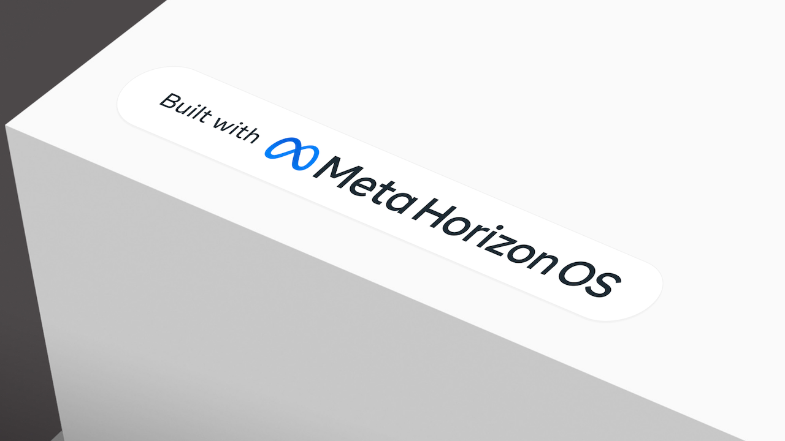

Other

Meta Horizon OS
Overhaul of the Quest operating system that spatializes the system interface allowing content to be manipulated and freely repositoned in a users enviornment. Providing greater spatial freedom and user control.